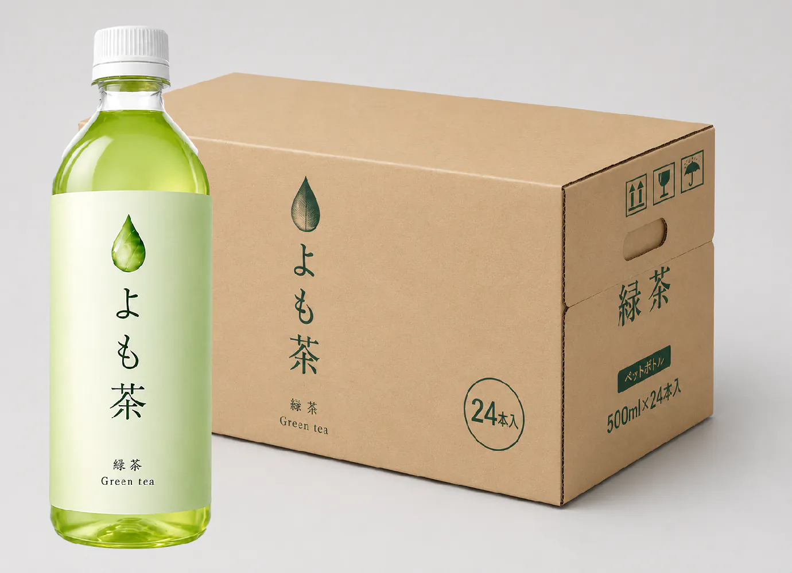

よも茶を定期購入しませんか？
最近話題のよも茶。量販店では売り切れが続出しており、めったに手に入らない状況です。
そこで、よも茶を定期購入できるサービスをご用意しました。

定期購入のメリット
毎月お届けするので、売り切れの心配がありません。
定期購入は、いつでも解約可能です。お客様のライフスタイルに合わせて、柔軟にご利用いただけます。
年払いでお支払いいただくと、毎月払いよりも2か月分お得です。
今すぐ定期購入する